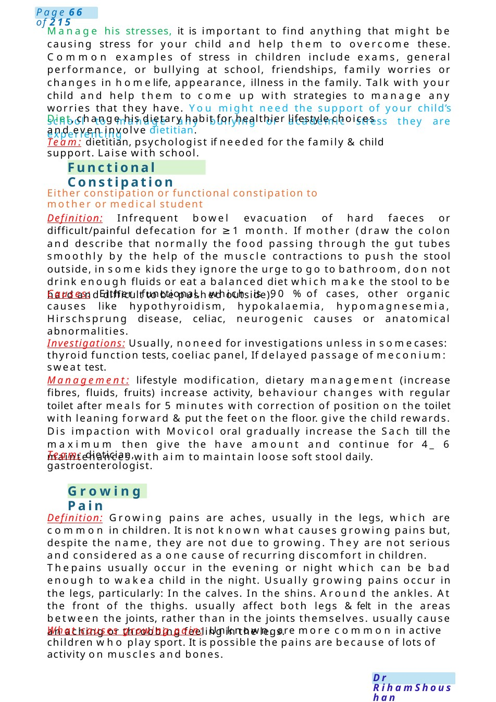
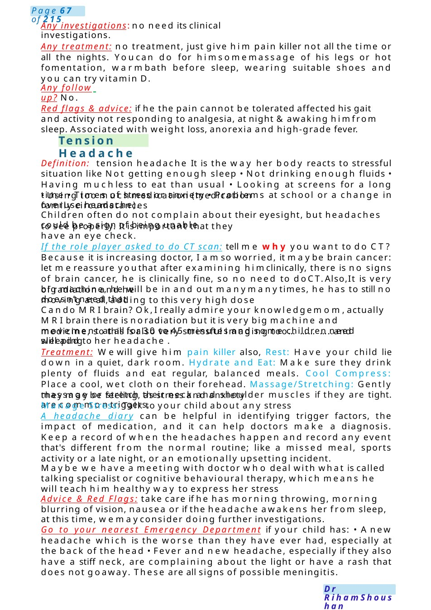

Functional Constipation
Manage his stresses, it is important to find anything that might be causing stress for your child and help them to overcome these. Common examples of stress in children include exams, general performance, or bullying at school, friendships, family worries or changes in homelife, appearance, illness in the family. Talk with your child and help them to come up with strategies to manage any worries that they have. You might need the support of your child’s school to manage any bullying or academic stress they are experiencing Diet, change his dietary habit for healthier lifestyle choices and even involve dietitian.
Scenario Summary
Manage his stresses, it is important to find anything that might be causing stress for your child and help them to overcome these. Common examples of stress in children include exams, general performance, or bullying at school, friendships, family worries or changes in homelife, appearance, illness in the family. Talk with your child and help them to come up with strategies to manage any worries that they have. You might need the support of your child’s school to manage any bullying or academic stress they are experiencing Diet, change his dietary habit for healthier lifestyle choices and even involve dietitian.
Full Original Scenario

Functional Constipation
Growing Pain
Manage his stresses, it is important to find anything that might be causing stress for your child and help them to overcome these. Common examples of stress in children include exams, general performance, or bullying at school, friendships, family worries or changes in homelife, appearance, illness in the family. Talk with your child and help them to come up with strategies to manage any worries that they have. You might need the support of your child’s school to manage any bullying or academic stress they are experiencing
Diet, change his dietary habit for healthier lifestyle choices and even involve dietitian.
Team: dietitian, psychologist if needed for the family &child support. Laise with school.
Either constipation or functional constipation to mother or medical student
Definition: Infrequent bowel evacuation of hard faeces or difficult/painful defecation for ≥1 month. If mother (draw the colon and describe that normally the food passing through the gut tubes smoothly by the help of the muscle contractions to push the stool outside, in some kids they ignore the urge to go to bathroom, do not drink enough fluids or eat a balanced diet which make the stool to be hard and difficult to be pushed outside).
Causes: Either functional, which is 90 %of cases, other organic causes like hypothyroidism, hypokalaemia, hypomagnesemia, Hirschsprung disease, celiac, neurogenic causes or anatomical abnormalities.
Investigations: Usually, noneed for investigations unless in somecases: thyroid function tests, coeliac panel, If delayed passage of meconium: sweat test.
Management: lifestyle modification, dietary management (increase fibres, fluids, fruits) increase activity, behaviour changes with regular toilet after meals for 5 minutes with correction of position on the toilet with leaning forward &put the feet on the floor. give the child rewards. Dis impaction with Movicol oral gradually increase the Sach till the maximum then give the have amount and continue for 4_ 6 maintenances with aim to maintain loose soft stool daily.
Team: dietician, gastroenterologist.
Definition: Growing pains are aches, usually in the legs, which are common in children. It is not known what causes growing pains but, despite the name, they are not due to growing. They are not serious and considered as a one cause of recurring discomfort in children.
Thepains usually occur in the evening or night which can be bad enough to wakea child in the night. Usually growing pains occur in the legs, particularly: In the calves. In the shins. Around the ankles. At the front of the thighs. usually affect both legs &felt in the areas between the joints, rather than in the joints themselves. usually cause an aching or throbbing feeling in the legs.
What causes growing pain: Unknown, are more common in active children who play sport. It is possible the pains are because of lots of activity on muscles and bones.

Tension Headache
they maybe feeling, as stress and anxiety are commontriggers.
medicine, so this is also very stressful imaging too..............and will add to her headache .
of radiation and he doesn’t need that
to see properly. It is important that they have an eye check.
- Using too muchmedication (medication overuse headache).
Any investigations: no need its clinical investigations.
Any treatment: no treatment, just give him pain killer not all the time or all the nights. Youcan do for himsomemassage of his legs or hot fomentation, warmbath before sleep, wearing suitable shoes and you can try vitamin D.
Any follow up? No.
Red flags & advice: if he the pain cannot be tolerated affected his gait and activity not responding to analgesia, at night &awaking himfrom sleep. Associated with weight loss, anorexia and high-grade fever.
Definition: tension headache It is the way her body reacts to stressful situation like Not getting enough sleep • Not drinking enough fluids • Having muchless to eat than usual • Looking at screens for a long time • Times of stress or anxiety • Problems at school or a change in family circumstances
Children often do not complain about their eyesight, but headaches could be a sign of being unable
If the role player asked to do CT scan: tell me why you want to do CT? Because it is increasing doctor, I amso worried, it maybe brain cancer: let mereassure youthat after examining himclinically, there is no signs of brain cancer, he is clinically fine, so no need to doCT.Also,It is very big machine, he will be in and out manymanytimes, he has to still no moving at all, adding to this very high dose
Cando MRIbrain? Ok,I really admire your knowledgemom,actually MRIbrain there is noradiation but it is very big machine and movement at all for 30 to 45 minutes and some children need sleeping
Treatment: Wewill give him pain killer also, Rest: Have your child lie down in a quiet, dark room. Hydrate and Eat: Make sure they drink plenty of fluids and eat regular, balanced meals. Cool Compress: Place a cool, wet cloth on their forehead. Massage/Stretching: Gently massage or stretch their neck and shoulder muscles if they are tight. Manage Stress: Talk to your child about any stress
A headache diary can be helpful in identifying trigger factors, the impact of medication, and it can help doctors make a diagnosis. Keep a record of when the headaches happen and record any event that's different from the normal routine; like a missed meal, sports activity or a late night, or an emotionally upsetting incident.
Maybe we have a meeting with doctor who deal with what is called talking specialist or cognitive behavioural therapy, which means he will teach him healthy way to express her stress
Advice & Red Flags: take care if he has morning throwing, morning blurring of vision, nausea or if the headache awakens her from sleep, at this time, wemayconsider doing further investigations.
Go to your nearest Emergency Department if your child has: • Anew headache which is the worse than they have ever had, especially at the back of the head • Fever and new headache, especially if they also have a stiff neck, are complaining about the light or have a rash that does not goaway. These are all signs of possible meningitis.